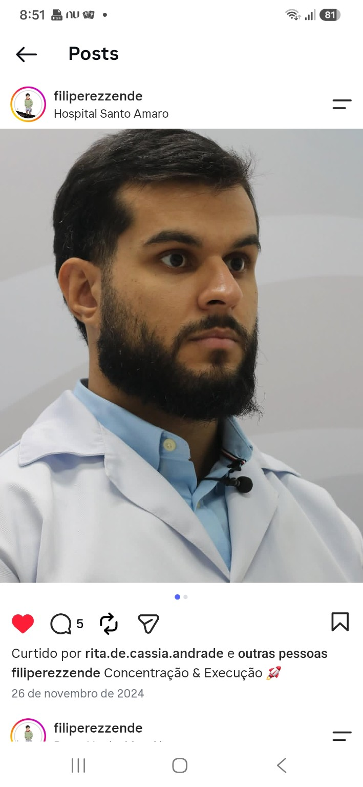

01
Dor ou sensibilidade
Na mandíbula, na face, perto do ouvido ou ao mastigar.
Se você sente dor, estalos, travamento ou dificuldade para mastigar, o primeiro passo é entender o que está acontecendo e buscar o cuidado adequado.

Você será ouvido(a) e poderá marcar um agendamento com um desses nossos especialistas.
CRO-BA 5156
Dr. Felipe Rezende é cirurgião bucomaxilofacial, com atuação em cirurgia ortognática. Atende no Centro Médico Hospital Santo Amaro, em Salvador, às quintas-feiras pela manhã.
Todos os convênios, exceto Planserv.
Centro Médico Hospital Santo Amaro · Salvador
Quintas-feiras pela manhã.
Cada pessoa vive uma situação diferente. Estes sinais não definem um diagnóstico, mas ajudam a perceber quando é importante buscar orientação profissional.
Na mandíbula, na face, perto do ouvido ou ao mastigar.
Sons ao abrir ou fechar a boca, com ou sem desconforto.
Dificuldade, limitação ou sensação de bloqueio ao movimentar a boca.
Desconforto que aparece ou aumenta durante as refeições.
Incômodos recorrentes que parecem acompanhar a tensão na face.
Quando o problema interfere no sono, na alimentação, na fala ou no bem-estar.
Compreender o impacto na vida faz parte do atendimento. Não se trata apenas de localizar a dor, mas de ouvir como ela tem afetado você.
Dificuldade ou receio de mastigar determinados alimentos.
Incômodo que atrapalha o descanso ou aparece ao acordar.
Dor persistente que interfere nas atividades do dia.
Dúvidas sobre qual profissional procurar e qual deve ser o próximo passo.
O primeiro contato começa com escuta e perguntas essenciais, uma de cada vez.
Consideramos o tempo da dor, o impacto na rotina e avaliações anteriores.
Quando indicado, ajudamos a organizar a avaliação com a equipe adequada.
ATM é a sigla para articulação temporomandibular, que liga a mandíbula ao crânio e participa de movimentos como falar, mastigar e abrir ou fechar a boca.
Não. O WhatsApp é usado para acolher, compreender a necessidade inicial e orientar o próximo passo. O diagnóstico e a indicação de tratamento dependem de avaliação profissional.
Você pode informar se já possui exames ou avaliações anteriores. A equipe orientará o que é necessário para sua situação.
Nem todo estalo tem a mesma causa ou importância. A presença de dor, travamento, limitação ou impacto na rotina ajuda a orientar a necessidade de avaliação.
Sim. Conte o que está sentindo. O atendimento inicial ajuda a compreender sua necessidade e a direcionar o cuidado adequado.
A conversa começa pela sua necessidade, sem compromisso e sem diagnóstico pelo WhatsApp.